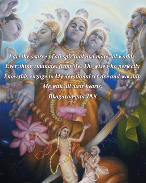
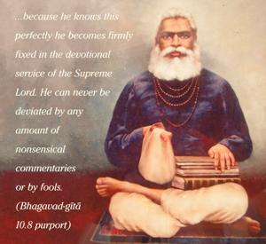
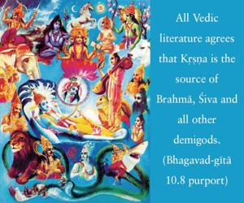
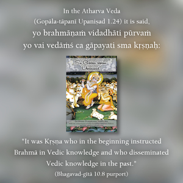

I am the source of all spiritual and material worlds. Everything emanates from Me. The wise who perfectly know this engage in My devotional service and worship Me with all their hearts.




A learned scholar who has studied the Vedas perfectly and has information from authorities like Lord Caitanya and who knows how to apply these teachings can understand that Kṛṣṇa is the origin of everything in both the material and spiritual worlds, and because he knows this perfectly he becomes firmly fixed in the devotional service of the Supreme Lord. He can never be deviated by any amount of nonsensical commentaries or by fools. All Vedic literature agrees that Kṛṣṇa is the source of Brahmā, Śiva and all other demigods. In the Atharva Veda (Gopāla-tāpanī Upaniṣad 1.24) it is said, yo brahmāṇaṁ vidadhāti pūrvaṁ yo vai vedāṁś ca gāpayati sma kṛṣṇaḥ: “It was Kṛṣṇa who in the beginning instructed Brahmā in Vedic knowledge and who disseminated Vedic knowledge in the past.” Then again the Nārāyaṇa Upaniṣad (1) says, atha puruṣo ha vai nārāyaṇo ’kāmayata prajāḥ sṛjeyeti: “Then the Supreme Personality Nārāyaṇa desired to create living entities.” The Upaniṣad continues, nārāyaṇād brahmā jāyate, nārāyaṇād prajāpatiḥ prajāyate, nārāyaṇād indro jāyate, nārāyaṇād aṣṭau vasavo jāyante, nārāyaṇād ekādaśa rudrā jāyante, nārāyaṇād dvādaśādityāḥ: “From Nārāyaṇa, Brahmā is born, and from Nārāyaṇa the patriarchs are also born. From Nārāyaṇa, Indra is born, from Nārāyaṇa the eight Vasus are born, from Nārāyaṇa the eleven Rudras are born, from Nārāyaṇa the twelve Ādityas are born.” This Nārāyaṇa is an expansion of Kṛṣṇa.
It is said in the same Vedas, brahmaṇyo devakī-putraḥ: “The son of Devakī, Kṛṣṇa, is the Supreme Personality.” (Nārāyaṇa Upaniṣad 4) Then it is said, eko vai nārāyaṇa āsīn na brahmā neśāno nāpo nāgni-somau neme dyāv-āpṛthivī na nakṣatrāṇi na sūryaḥ: “In the beginning of the creation there was only the Supreme Personality Nārāyaṇa. There was no Brahmā, no Śiva, no water, no fire, no moon, no heaven and earth, no stars in the sky, no sun.” (Mahā Upaniṣad 1.2) In the Mahā Upaniṣad it is also said that Lord Śiva was born from the forehead of the Supreme Lord. Thus the Vedas say that it is the Supreme Lord, the creator of Brahmā and Śiva, who is to be worshiped.
In the Mokṣa-dharma section of the Mahābhārata, Kṛṣṇa also says,
prajāpatiṁ ca rudraṁ cāpy
aham eva sṛjāmi vai
tau hi māṁ na vijānīto
mama māyā-vimohitau
“The patriarchs, Śiva and others are created by Me, though they do not know that they are created by Me because they are deluded by My illusory energy.” In the Varāha Purāṇa it is also said,
nārāyaṇaḥ paro devas
tasmāj jātaś caturmukhaḥ
tasmād rudro ’bhavad devaḥ
sa ca sarva-jñatāṁ gataḥ
“Nārāyaṇa is the Supreme Personality of Godhead, and from Him Brahmā was born, from whom Śiva was born.”
Lord Kṛṣṇa is the source of all generations, and He is called the most efficient cause of everything. He says, “Because everything is born of Me, I am the original source of all. Everything is under Me; no one is above Me.” There is no supreme controller other than Kṛṣṇa. One who understands Kṛṣṇa in such a way from a bona fide spiritual master, with references from Vedic literature, engages all his energy in Kṛṣṇa consciousness and becomes a truly learned man. In comparison to him, all others, who do not know Kṛṣṇa properly, are but fools. Only a fool would consider Kṛṣṇa to be an ordinary man. A Kṛṣṇa conscious person should not be bewildered by fools; he should avoid all unauthorized commentaries and interpretations on Bhagavad-gītā and proceed in Kṛṣṇa consciousness with determination and firmness.